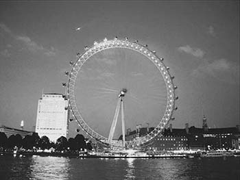
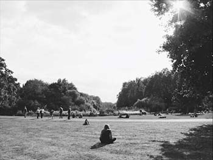
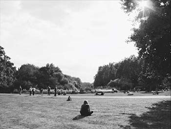
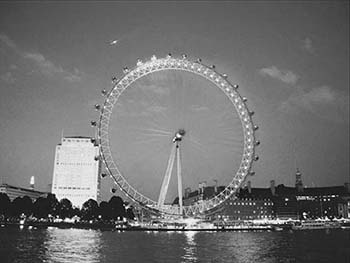
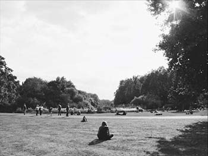

PHOTO
I enjoy taking pictures.
These are pictures I took while traveling Europe.

 


I enjoy taking pictures.
These are pictures I took while traveling Europe.


I also enjoy listening to music and watching music video.
Zion.T is one of my favorite singer in Korea, and this is the song NA B YA he worked with Peejay.
I recommend listening through earphones or headphones.